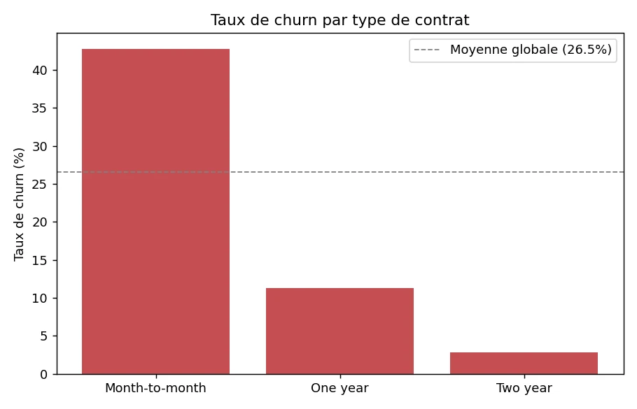

Calculer un taux pour chaque groupe
J’ai utilisé environ 7 000 observations et construit des tableaux croisés par type de contrat, ancienneté et service Internet. Pour chaque groupe, j’ai rapporté le nombre de départs au nombre de clients concernés.
Ce que le contrat fait ressortir
Les contrats mensuels concentrent un taux de départ plus élevé que les contrats de deux ans. C’est un point de départ pour l’équipe de fidélisation, surtout si elle peut croiser cette information avec l’ancienneté.

Comparer les contrats
Taux de résiliation observé parmi les clients en contrat mensuel.
Taux observé parmi les clients en contrat d’un an.
Taux observé parmi les clients en contrat de deux ans.
Ce qu’il faut encore isoler
Les nouveaux clients ont aussi plus souvent un contrat mensuel. Avant de recommander une offre, je comparerais les contrats à ancienneté comparable et je vérifierais la taille de chaque groupe.
Le taux et le nombre donnent ici la même priorité
Sur 7 043 observations, le contrat mensuel représente 3 875 clients et 1 655 des 1 869 départs, soit près de 89 % des résiliations relevées. C’est le premier segment que j’examinerais : il combine le taux le plus élevé et le plus grand nombre de départs. Dans un autre portefeuille, ces deux critères pourraient désigner des groupes différents.
L’écart tient-il à ancienneté comparable ?
J’ai séparé les clients en quatre tranches d’ancienneté : 0–12, 13–24, 25–48 et 49 mois ou plus. Dans la dernière tranche, le taux est de 26,0 % pour le mensuel (89 départs sur 342) et de 3,3 % pour les contrats de deux ans (42 sur 1 263). L’écart est plus faible que dans les taux globaux, mais reste visible dans cette tranche. Cela ne suffit pas à l’attribuer au contrat : le service, le tarif et d’autres différences de clientèle peuvent encore jouer.
Passer de l’analyse à une action
Je choisirais un segment à examiner avec l’équipe de fidélisation et je définirais une action précise. Pour en mesurer l’effet, je comparerais le taux de départ de clients comparables, répartis entre un groupe contacté et un groupe témoin. L’analyse actuelle indique où regarder. Ce test dirait si l’action évite assez de départs pour couvrir son coût.